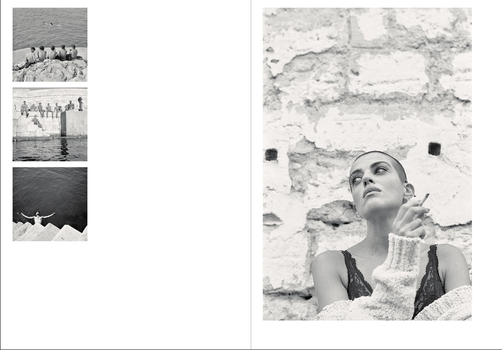

Fritto Misto
41 fanzine di studenti dell’ISIA di Roma, nate da un unico archivio di 180 fotografie di Mariano Doronzo.

Il progetto
Un progetto espositivo ideato da Francesco Delrosso: da un archivio comune nascono 41 narrazioni autonome, accomunate dalla stessa materia visiva ma sviluppate con processi editoriali indipendenti. Tra Italia e Inghilterra, le immagini di Doronzo restituiscono centralità alle storie quotidiane e marginali. Ne emerge un insieme eterogeneo di sguardi, in cui l’archivio non è un insieme chiuso ma uno spazio aperto di possibilità narrative.
Via di Fuga
La mia fanzine.
Racconta il cambiamento emotivo di una donna di fronte alla presenza maschile. All’inizio appare libera e serena nei suoi spazi, ma l’atmosfera muta quando inizia a sentirsi guardata. Non c’è violenza fisica: emerge la fragilità data dal peso degli sguardi, che diventa paura e desiderio di fuga. Il racconto si chiude con la solidarietà femminile, unico rifugio sicuro e forza per ritrovare la propria libertà.

